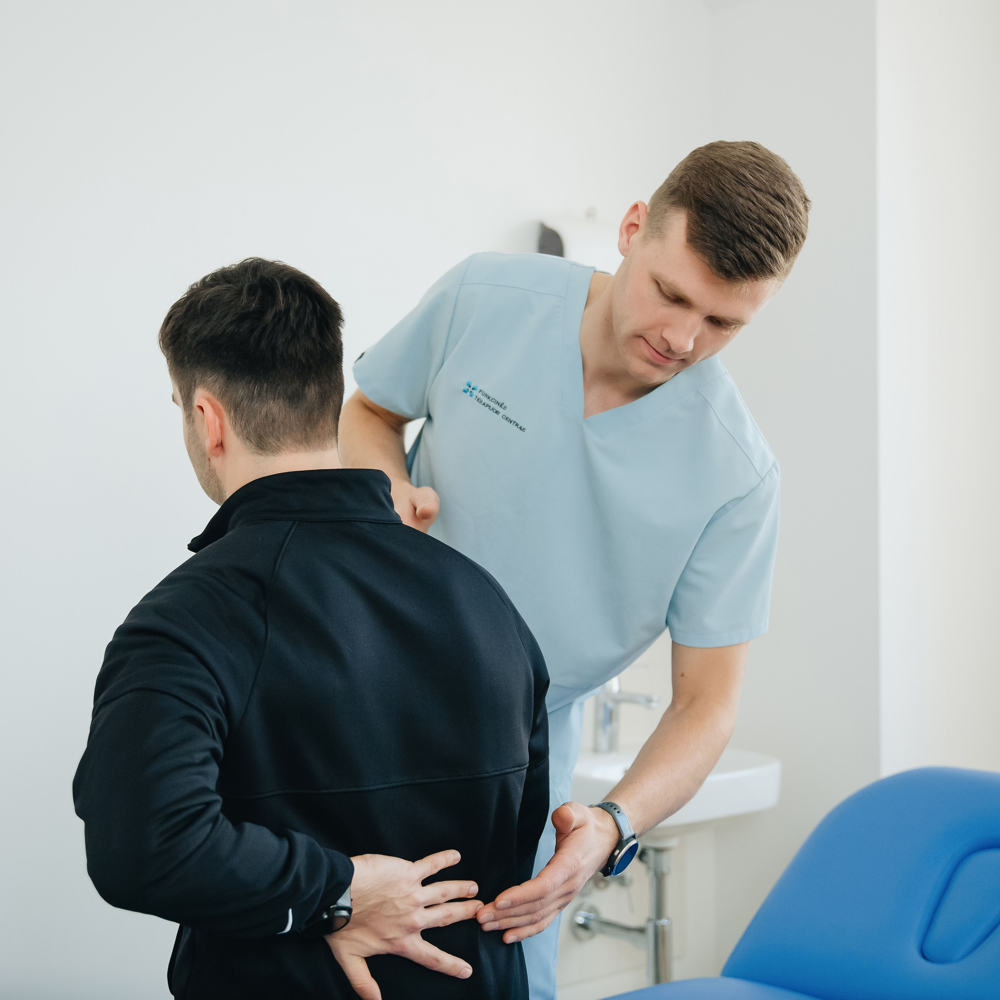
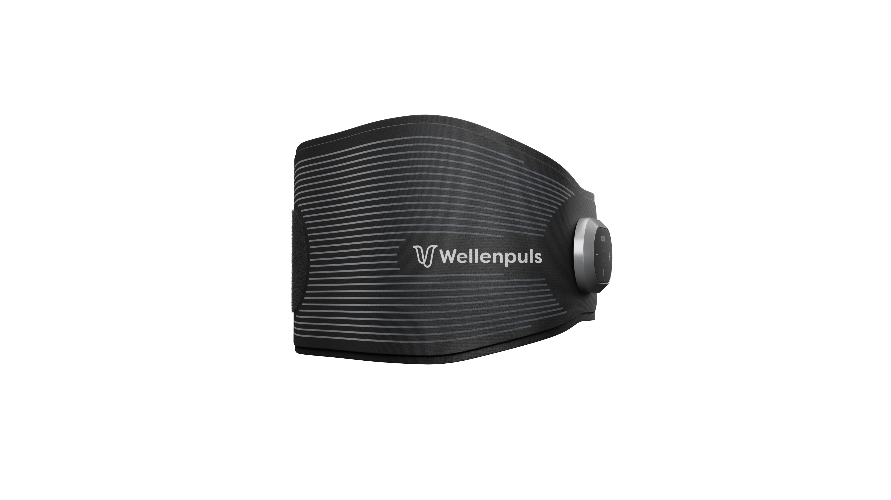

Liebe Leserin, lieber Leser,
wenn Sie diese Zeilen lesen, ist es vermutlich gerade wieder schlimmer geworden.
Nach einer Stunde Stehen in der Küche.
Nach dem Spaziergang, der eigentlich gar nicht so lang war.
Nach der Autofahrt, nach dem Nachmittag am Schreibtisch, nach dem Gottesdienst auf der harten Bank.
Bei mir saß es immer an derselben Stelle: mittig im unteren Rücken, breit wie ein Gürtel. An schlechten Tagen zog es bis ins Bein.
Vielleicht sind Sie an dem Punkt, an dem ich auch war.
Der Stift ist runtergefallen. Sie lassen ihn liegen. Irgendwer hebt ihn schon auf.
Sie ziehen nur noch Schuhe ohne Schnürsenkel an.
Den Rasen mäht jemand anderes. Das Auto wäscht auch jemand anderes.
Im Restaurant suchen Sie zuerst den Stuhl aus und dann das Essen.
Erst haben Sie im Verein aufgehört. Dann mit dem Laufen. Dann mit dem Schwimmen.
Dann war die große Hunderunde weg. Dann die kleine.
Ihr Enkelkind heben Sie nicht mehr hoch. Sie setzen sich hin und warten, bis es zu Ihnen kommt.
Und wenn jemand Sie einlädt, sagen Sie nicht mehr einfach zu. Sie sagen: „Mal schauen, wie es mir dann geht.“
Und nachts? Ich habe jahrelang keine Lage gefunden, in der ich durchschlafen konnte. Auf der Seite ging es eine Stunde, dann musste ich mich drehen. Morgens bin ich aufgestanden wie ein alter Mann, und ausgeruht war ich nie.
Das ging bei mir nicht ein paar Wochen so. Das ging Jahre.
Ich habe alles probiert.
Ich war beim Physiotherapeuten. Sechs Termine, zehn Termine, ich weiß es nicht mehr. Er hat mir Übungen mitgegeben, und die haben auch etwas gebracht.
Dann kam eine Woche mit viel Arbeit, dann ein Wochenende, dann ein schlechter Tag. Und die Übungen lagen wieder eine Woche herum.
Ich habe Dehnvideos auf YouTube angeschaut. Ich wollte es richtig machen.
Ich hatte eine Faszienrolle, einen Igelball und einen alten Tennisball.
Eine Massagepistole, ein Theraband und einen Stützgürtel.
Ein Kirschkernkissen und eine Akupressurmatte.
Eine Rotlichtlampe, eine neue Matratze und einen Lattenrost mit Zonen.
Der Wasserkocher stand neben dem Sofa, damit ich für die Wärmflasche nicht durch die halbe Wohnung laufen musste.
Irgendwann richtet sich das ganze Leben nach dem Rücken. Und man fängt an zu denken: „Es ist jetzt halt so.“
Wenn Sie an diesem Punkt sind oder kurz davor, lesen Sie bitte weiter. Ich bin da rausgekommen, und ich möchte Ihnen erzählen, wie.
Was mir jahrelang keiner gesagt hat
Ihre Wirbelsäule wird von Muskeln gehalten. Die wichtigsten davon liegen tief, direkt an den Wirbeln, und in der seitlichen Bauchwand. Sie halten Sie aufrecht, wenn Sie stehen, gehen und sitzen, ohne dass Sie davon etwas merken.
Wenn der Rücken wehtut, schont der Körper. Er spannt Muskeln an, er hält Sie vom Bücken ab, er sagt: lass das lieber.
Bei einer frischen Verletzung ist das richtig. Zwei, drei Tage schonen, dann heilt es.
Schwierig wird es, wenn dieser Schutz nicht mehr aufhört.
Sie bücken sich nicht mehr, also verlernt der Körper das Bücken, und beim nächsten Mal tut schon die halbe Bewegung weh. Sie lassen die große Hunderunde weg, also wird die Strecke kürzer, die Sie ohne Schmerzen schaffen. Die tiefen Muskeln bekommen immer weniger zu tun und werden schwächer. Deshalb hält der Rücken langes Stehen und Sitzen immer schlechter aus.

Diesen Kreislauf sollen die Übungen vom Physiotherapeuten unterbrechen. Deshalb fühlt es sich an, als würde es immer schlimmer, obwohl man doch alles richtig macht.
Als ich das verstanden hatte, war ich zuerst nicht erleichtert. Ich war wütend. Über die Jahre, in denen ich mich immer weiter zurückgezogen habe. Über das Geld. Über die vielen Abende auf dem Sofa mit der Wärmflasche, während die anderen unterwegs waren.
Woran es bei mir gescheitert ist
An guten Tagen wollte ich alles nachholen. Der Rücken meldete sich mal nicht, also habe ich den Keller aufgeräumt, den Einkauf gemacht und drei Übungen hintereinander, weil es ja ging.
Zwei Tage später lag ich flach. Dann habe ich eine Woche gar nichts gemacht. Dann kam der nächste gute Tag, und ich habe wieder zu viel gemacht.
Um aus dem Kreislauf herauszukommen, braucht ein Muskel zwei Dinge: einen Reiz, der wirklich bei ihm ankommt, und diesen Reiz regelmäßig.
Das klingt logisch. Trotzdem bin ich jahrelang an beidem gescheitert.
Erstens: die Regelmäßigkeit
Der Körper baut ab, was er eine Weile nicht braucht. Da ist er ganz unsentimental.
Wenn Sie Ihre Rumpfmuskulatur mit Übungen trainieren, müssen Sie diese Übungen regelmäßig machen. Eine Woche trainieren und dann zwei Wochen Pause bringt so gut wie nichts.
Zweitens: die Qualität
Sie können eine Übung 200 Mal machen. Wenn dabei der falsche Muskel arbeitet, passiert nichts.
Genau das war mein Problem. Ich habe meine Übungen oft schlecht ausgeführt, und bei der tiefen Rückenmuskulatur merkt man das selbst kaum.
Bleibt die Frage: Woher bekommt man beides?

Physiotherapie
Eigentlich die beste Lösung. Die Übungen, die ich bekommen habe, haben dort geholfen, wo sie sollten.
Nur bei der Umsetzung zu Hause ist der Physiotherapeut eben nicht dabei.
Das Fitnessstudio
Mein Studio ist gut, die Geräte treffen die richtigen Muskeln.
Aber ich muss jedes Mal hinfahren. Jeden zweiten Tag 20 Minuten hin und 20 zurück war in meinem Alltag einfach zu viel.
Das Zeug in der Ecke
Rolle, Ball, Massagepistole, Akupressurmatte. Damit lockert man die Muskulatur. Aufbauen kann man sie damit kaum.
Der Physiotherapeut schafft die Qualität, aber nicht die Regelmäßigkeit. Das Studio auch nicht. Das Zeug in der Ecke schafft keins von beidem.
Strom ist nicht gleich Strom
Irgendwann bin ich auf Elektrostimulation gestoßen. Ich war skeptisch. Dabei dachte ich an das Kribbelgerät vom Orthopäden und an die Bauchgürtel aus dem Fernsehen.
Also habe ich mich eingelesen. Das hier hätte ich gern früher gewusst:
TENS legt einen schwachen Strom über die Schmerzsignale. Das kann für ein paar Stunden lindern. Die Muskeln trainiert es nicht.
EMS-Gürtel aus der Werbung lassen Bauch, Po oder Beine kräftig zucken. Gemacht sind sie für Fitness und Figur. Ins Studio mit Ganzkörperanzug muss man zu festen Terminen, meist mit Abo.
NMES, die neuromuskuläre Elektrostimulation, setzen Kliniken und Rehazentren seit Jahrzehnten ein, zum Beispiel nach Operationen. Der Impuls bringt einen Muskel dazu, sich anzuspannen, auch wenn man selbst still sitzt. Entscheidend ist, wo die Elektroden sitzen und welcher Muskel angesprochen wird.
Für den unteren Rücken gab es lange kein Gerät, das genau dafür gebaut war.
An der Deutschen Sporthochschule Köln hat ein Sportwissenschaftler, Christian Senfleben, in seiner Masterarbeit etwas untersucht, das mir bis dahin niemand gesagt hatte: Bei Menschen mit Rückenschmerzen ist ausgerechnet die tief liegende Rumpfmuskulatur geschwächt.
Für seine Studie brauchte er ein Gerät, das genau diese Muskeln erreicht. Es gab keins. Also hat er es gebaut und mit 60 Teilnehmenden über acht Wochen getestet. Danach wollten Teilnehmende die Prototypen kaufen, und daraus wurde eine Firma.
Das Gerät heißt Wellenpuls LWS. Ein Gurt, den man um den unteren Rücken legt. Die Elektroden sitzen genau dort, wo die tiefe Muskulatur liegt, und der Impuls kommt dort an, wo der Gurt sitzt.
Man braucht dafür keine Technik. Man muss nicht wissen, ob man es gerade richtig macht. Und wie stark der Reiz ist, entscheidet man selbst. An guten Tagen mehr, an schlechten weniger.
Warum die Regelmäßigkeit plötzlich klappt
Zwanzig Minuten. Gurt umlegen, hinsetzen, fertig. Nach 20 Minuten schaltet er sich selbst ab.
Das geht auf dem Sofa, während der Fernseher läuft. Oder abends mit einem Buch, wenn man eigentlich nichts mehr vorhatte.
Dazu ist eine Wärmefunktion eingebaut, die die Muskeln dabei entspannt. Man muss sich nicht überwinden. Ehrlich gesagt freue ich mich inzwischen darauf.

Klingt gut. Aber da war wieder mein Misstrauen.
Wird das wieder ein Gerät, das in der Ecke landet? Und für knapp 500 Euro ist es nicht billig.
Dann habe ich zusammengerechnet, was ich in den Jahren davor ausgegeben hatte. Es waren deutlich mehr als 5.000 Euro, und besser geworden war nichts.
Die Bewertungen haben mich am Ende überzeugt, und ich habe bestellt.
Nach drei Tagen war das Paket da, mit einer Videoanleitung vom Gründer. Man befeuchtet die Elektroden mit etwas Wasser, legt den Gurt um, zieht ihn mit dem Klettverschluss fest und schaltet ein.
Ich habe mich aufs Sofa gelegt und gelesen, während das Gerät gearbeitet hat. Die Stimulation fühlt sich wie ein Pulsieren an, und man merkt, wie die Muskeln arbeiten.
Nach 20 Minuten war ich fertig.
Der Tag danach
Am Abend hatte ich Muskelkater, tief im unteren Rücken. Wie nach einer guten Stunde beim Physiotherapeuten.
Da wusste ich, dass ich dranbleibe.
Das mache ich jetzt seit einigen Monaten. Jeden zweiten bis dritten Abend auf dem Sofa, so wie es auch in der Studie gemacht wurde.
Den Regler habe ich jede Woche ein Stück höher gestellt.
Nach drei Wochen fühlte sich mein Rücken stabiler an als seit Jahren.
Ich kann wieder spazieren gehen und Fahrrad fahren. Ich gehe mit dem Hund die große Runde und hebe meine Enkelin auf die Schaukel.
Das Wichtigste für mich: Ich plane nicht mehr mein ganzes Leben um meinen Rücken herum.
Für wen das nichts ist
Ich kenne Ihre Vorgeschichte nicht. Ich weiß nicht, was bei Ihnen los ist. Und ich bin der Letzte, der Ihnen erzählt, dass ein Gerät alles löst.
Wenn Sie erwarten, dass Sie den Gurt umlegen und der Schmerz ist weg, lassen Sie es. Das passiert nicht. Es ist ein Trainingsgerät, und Training braucht Wochen.
Wenn Sie glauben, es reicht, das Ding zu besitzen, lassen Sie es auch. Dann liegt es in vier Wochen in derselben Ecke wie meine Faszienrolle.
Wenn Sie aber da sind, wo ich war, wenn Sie es schon oft versucht haben und eigentlich wissen, was zu tun wäre, es aber nicht durchhalten, dann würde ich an Ihrer Stelle das hier noch ausprobieren.
Zum Preis
Der Wellenpuls kostet 489 Euro. Das ist kein kleiner Betrag, und ich will das nicht schönreden.
Ich habe ihn jetzt über vier Monate regelmäßig genutzt. Bei 64 Einheiten sind das gut 7 Euro pro Einheit.
Der Hersteller gibt eine 30-Tage-Geld-zurück-Garantie. Wenn Sie in den ersten 30 Tagen merken, dass es nichts für Sie ist, schicken Sie ihn zurück und bekommen Ihr Geld.
Was ich Ihnen noch mitgeben will
Mein Rücken war nicht das ganze Problem. Mir fehlte etwas, das ich auch an einem schlechten Dienstag noch durchziehe.
Jetzt liegt es bei Ihnen. Ich habe erzählt, was ich weiß und wie es bei mir gelaufen ist. Was Sie daraus machen, entscheiden Sie.
Der Kreislauf von vorhin läuft jedenfalls weiter, und er läuft nur in eine Richtung, solange man nichts dagegen tut.
Alles Gute für Ihren Rücken,
Georg